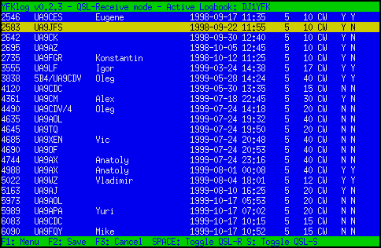

Preliminary version (11-Mar-2008). Always under construction.
Copyright (c) 2008-2019 Fabian Kurz, DJ1YFK <mail@fkurz.net>
Permission is granted to copy, distribute and/or modify this document
under the terms of the GNU Free Documentation License, Version 1.2
or any later version published by the Free Software Foundation;
with no Invariant Sections, no Front-Cover Texts, and no Back-Cover
Texts. A copy of the license is included in the section entitled "GNU
Free Documentation License".
YFKlog is a general purpose ham radio logbook program designed to run on *nix systems. This manual tries to give a detailed description of all features and functions of YFKlog.
The main website of YFKlog is located at: http://fkurz.net/ham/yfklog.html
Install the required packages:
On Ubuntu or Debian Linux, you can satisfy all requirements simply by running:
sudo apt-get install perl libdbd-sqlite3-perl libclass-dbi-sqlite-perl
make
libsqlite3-0 libcurses-perl
Download the latest version of
YFKlog and unpack the tarball to a directory of your choice, then run
make install.
$ wget http://fkurz.net/ham/yfklog/yfklog-0.4.0.tar.gz
$ tar zxfv yfklog-0.4.0.tar.gz
$ cd yfklog-0.4.0
$ su
# make install
By default, YFKlog will be installed to /usr, but you can specify
another directory by adding the option
DESTDIR=/your/favorite/directory. If you have no root privileges on
the machine, a path within your home-directory would be suitable.
Now you are ready to run YFKlog, the executable is simply called
yfk and should be in your PATH.
On your first run, YFKlog will create a directory, ~/.yfklog/,
where it stores your configuration and (in case of SQLite) your logbook. A
setup screen appears, where you can edit the most important settings (see Setup below).
You can chose between two databases,
SQLite or
MySQL.
SQLite is a lightweight,
self-contained, zero-configuration SQL database engine and probably the right
choice for most users of YFKlog. It's very easy to set up (for example in
Debian, just install libdbd-sqlite3-perl and
libclass-dbi-sqlite-perl and you're set!) and surprisingly fast.
MySQL is pretty much the opposite. Don't use it, unless you know why you'd want to.
There is nothing really to set up, this is the default setting.
SQLite will autmatically create a SQLite database file
of the name as set in dbname=.... This single file contains the
whole database. It's trivial to back up and (if needed) accessible via the
sqlite3 command line utility just like a MySQL database.
Create a database (in this example it's called YFKlog, the user
is dj1yfk and the password is notmypassword) and
grant the user the neccessary permissions:
$ mysqladmin -u root -p create YFKlog
$ mysql -u root -p
mysql> GRANT ALL ON YFKlog.* TO dj1yfk@localhost IDENTIFIED BY 'notmypassword';
mysql> FLUSH PRIVILEGES;
mysql> quit
Now start YFKlog and change at least the mandatory settings (see below) according to your database setup. If YFKlog can properly connect the database, it will automatically create its database tables after the first start. When updating from an older version, all upgrades of the database structure are performed automatically as of version 0.2.3.
Most of the permanent settings of YFKlog are stored in a file, called
~/.yfklog/config. This file will automatically be created on your
first run of YFKlog, and can be changed either from YFKlog itself (accessible
from the main menu) or edited
manually with your favourite text editor.
Have a careful look at the possible settings!
If you're editing the file manually, note that the file-format allows an
arbitrary placement of the variables in the file. If a variable is set more
than once, the last occurance is used. The format name=value must
be used, no spaces/tabs between name= and value are
allowed.
Some settings in this file are mandatory. YFKlog won't run properly without setting these. Other settings are optional, which doesn't mean they are not important.
sqlite.
For MySQL: The database server. In most cases this
is the same machine as YFKlog is running on. In that case, either
localhost (for a connection through a socket) or
127.0.0.1
(for a TCP/IP connection) should be used here. Note that (depending on
the server settings), either of these might not work./dev/ttyS0/tmp~/.yfklog/config.
All functions of YFKlog are accessible through the main menu, shown on the right. The single menu points will be described in greater detail in the following sections; some are self explanatory. A quick overview:
In the Logging Mode, as shown in the picture, the screen is split up into 4 main windows. A QSO can be saved with F2, cleared with F3, pressing F5 queries band and more via hamlib. F6 performs a callsign lookup for the current call with a browser as set in the config. F7 enables remote logging mode for fldigi/gmFSK.
You can switch between the Windows 1, 3 and 4 by pressing F8, F9 and F10 respectively.
~/.yfklog/configcty.dat. The last line also shows -
if available
- known club memberships, if the DXCC was worked before,
and if so on which bands, and if the callsign appears in any other log,
as specified by checklogs in the config file. This is an example where all these
information are shown.Logged QSOs can be searched and edited under the menu point Search and Edit. The interface is similar to the normal logging screen, but the entry form now has some additional fields. Actually, all database fields can be directly seen and edited here.
First, enter any search criteria into the given fields. For example, when you are looking for all contacts with Brazil on 40m, go to the field 'Band' and enter 40, then go to the 'DXCC' field and enter 'PY'. Pressing F5 will start the search, and you can chose any of the matching QSOs to edit, as seen in the screen shot.
Any matching QSO can now be selected and after pressing enter, the QSO details appear in the fields and can be edited. F2 saves the changes made, F3 cancels the changes, F4 permanently deletes the selected QSO.
In some cases, you may want to change a group of QSOs at once, which would be a lot of work via this Search and Edit mode one by one. For such occasions, it is advantageous to know some basic SQL commands to do the changes directly on the mysql command line. The Appendix II contains examples for several common scenarios (like toggling the QSL-sent flag for a number of QSOs, deleting QSOs from a date-range etc.) which can easily be adopted, even without knowledge of SQL.
Effective handling of QSL cards, both incoming and outgoing, is easily done with YFKlog. This section describes how.
The menu point QSL enter mode allows you to record received QSLs very effectively. After entering 3 or more letters of the callsign, all QSOs with matching callsigns from the current log are shown. The user can select a QSO, press space bar and the QSL-received status of this QSO toggles between 'N' to 'Y'. Pressing 's' on the same QSO toggles the QSL-sent status between 'N', 'Y' and 'Q', which makes it very easy to answer incoming QSL cards by putting them into the QSL queue and later process them.
Any changes made to can be saved by pressing F2 or cancelled by pressing F3. The screenshot shows an example screen, for the string 'UA9'.
Outgoing QSL cards are saved in a QSL queue before they are processed. This happens either by logging a QSO with the QSL-S field set to 'Q', by importing a log with the qslsi option set to 'Q', or by changing the QSL-sent flag of a QSO to 'Q' in the QSL-enter mode as described above.
The queue can be emptied in different ways, by printing or writing the cards:
The queued QSLs can be printed into a PDF file by selecting the QSL
print mode. Different label definition files (*.lab) are
available, and Appendix III gives a short tutorial how to write
your own. The conversion to PDF is done with LaTeX. To work properly,
pdflatex, with the geometry package must be
installed on the system.
Depending on the label definition file, an arbitrary number of QSOs may fit on one label. If the first label for one station is full, a new one is created. The output is alphanumerically sorted by the callsign.
After generating the PDF-File with the QSL-labels, YFKlog asks the user to review the file, and if he's is happy to remove the printed cards from the QSL-queue and set their status to 'Y'. Note that this cannot be undone! When in doubt, select 'No'. You can always flush the queue later if needed.
To write cards by hand, YFKlog has the "QSL write mode". When selected from the main menu, all queued QSL cards with their details are shown, sorted by callsigns.
When a QSL card for a highlighted QSO has been written, pressing space bar will change it's QSL status from "Q" (queued) to "Y" (yes, sent), and you can continue with the next card.
If you finished writing your cards, pressing F2 will save all changed QSL-flags, F3 cancels all changes and returns to the main menu.
The ADIF (Amateur Data Interchange Format) is now the de facto standard format to exchange logbook data. YFKlog can import and export this format, using a good subset of the available defined fields.
See Appendix X for a detailled description of the database design of YFKlog and differences to ADIF.
Almost all fields in the log table in YFKlog's database can directly be mapped to an ADIF field. This means, that (almost) no data is lost when exporting to ADIF from YFKlog. There are two exceptions:
To export the current logbook to an ADIF file, chose "ADIF export" in the
main menu. You'll be asked to enter a filename (or accept the default,
yourcall.adi) and specify a date-range for the log to be exported
(or export the whole log). The ADIF file will then be written and saved in the
current directory. If a file with the same name already exists, it will be
overwritten.
As mentioned above, most of the possible (and all of the commonly used!) ADIF fields have an equivalent entry in the database used by YFKlog. To import an ADIF file, move it to the directory YFKlog resides in, and chose "ADIF import" from the main menu.
You'll be given a list of ADIF files in the current directory and asked to chose one to import into the current logbook.
The actual import procedure consists of three steps: First the ADIF file is
parsed, that means, the ADIF data structure (<call:6>DJ1YFK
...) is read. In the next step, each QSO is checked for sanity, the
DXCC, prefix, ITU/CQ zones are determined (if not included in the file) and
finally in the last step the log is added to the database.
Note that currently the DXCC country information from an ADIF file is ignored. YFKlog always tries to determine the DXCC of each call itself. If the contact doesn't contain some information like power, or QSL-sent flags, the default value as set in the config file is used.
The speed of the ADIF import is approximately 10 000 QSOs per minute on the author's PC (1.8GHz, 256MB RAM).
to be written...
Keeping several logs in one database is not a problem with YFKlog. Under the menu point "Select Logbook", you can change the current logbook or add a new logbook to the database.
It makes sense to name them after the callsign used, but you could chose any
name. Note that, if the callsign contains a slash (/), it's automatically
replaced with an underscore (_) for the internal logbook name (i.e. PA/DJ1YFK/P
will be pa_dj1yfk_p internally) to avoid several problems. When printing
QSL labels however, or exporting the log, it's changed back to a slash.
The standings for several popular awards, namely DXCC, WPX (PFX), WAZ (CQZ), IOTA and WAS (STATE) and VUCC (GRID) can be calculated by YFKlog. It considers both paper QSL and LoTW confirmations for this, and lists them once combined and once separately. Custom awards are possible with some limitations.
The screenshot shows the author's DXCC score. You can see five columns: Band, number of worked entities, number of confirmed entities (either LoTW or paper), number of entities confirmed by paper QSO, number of entities confirmed by LoTW.
The used date range (if any) and the bands to be included in these standings
can be chosen/changed at runtime if wanted. The default bands are set in the
config file as awardbands.
Additionally to the overview as seen on the screenshot, a detailled list of each DXCC/Prefix/State/etc versus the bands is written to a file, as stated. Examples: DXCC, WPX, CQ-Zones, etc.
Additional to the default awards, you can generate statistics for custom awards. The database structure is fixed, and adding additional fields for all kinds of awards is not the intention of the author, instead the "Remarks" field can be used for this purpose, in the format "$award:$value". For example to save a DOK for a QSO, an entry like "DOK:S07", "DOK:N16" has to be saved in the remarks field. Accordingly, RDAs would be entered as "RDA:MO-01", "RDA:VO-12" etc. In the award mode "Custom", you can generate statistics of those items (DOK, RDA, whatever), by specifying the name of the item. All QSOs are then searched for matching comments and statistics like for the other awards are generated.
Several statistics, such as QSOs per Band, Continent or Mode, can be retrieved in the same sub menu. Finally, it's possible to generate a marker file for Xplanet which shows all DXCC entities in different colours: Red for needed, yellow for worked, and green for confirmed DXCCs. This can make a beautiful desktop background, which includes a realtime grayline map!
YFKlog maintains a database of names/QTHs for callsigns. If you enter a QSO with a known call, the name- and QTH-fields are automatically filled.
It's possible to edit or delete entries in this database by chosing "Edit Name/QTH DB" from the main menu.
YFKlog makes it easy to keep track with the LoTW status of your QSOs!
For each QSO, YFKlog saves a value (called QSLrL, QSL-received-LoTW), which can be:
Selecting "Export to LoTW" from the main menu will cause YFKlog to export all QSOs from the current log with the QSLrL-flag N to an ADIF file, and changes these QSOs to R (requested). The ADIF file can then be signed with tQSL and uploaded to LoTW or signed and uploaded automatically.
For uploading directly with tqsl (which needs to be fully set
up and working on your PC before you can use it from YFKlog) you need to specify at least
one station location in the configuration value lotwlocation for
each callsign. An example value would be:
lotwlocation=DJ1YFK:Rheine,DJ1YFK:Dresden,DJ1YFK:Munich,SO5CW:Warkawhich defines three station locations for DJ1YFK and one for SO5CW. Once you have exported the ADIF data for LoTW, YFKlog will ask you if you would like to sign and upload the file; you can select one of the defined station locations.
Received QSL records from LoTW can be downloaded via the LoTW web-interface,
under "Your QSOs" → "Download report" or downloaded by YFKlog (for this
to work you need to set your LoTW account username and password in your config
file).
The file downloaded from LoTW, called lotwreport.adi, contains all
new confirmations since your last download.
This file may contain QSL records for one or several of your callsigns, and can be imported to YFKlog via "Import from LoTW" in the main menu.
YFKlog will update the QSLrL flag of each confirmed contact accordingly. If the file contains confirmations for several callsigns, YFKlog automatically selects the proper logbook to update, and produces a warning if a QSO (or even a logbook) cannot be found.
The lotwreport.adi file might contain additional information,
like the CQ zone or IOTA reference of the station. By default, this
information is ignored by YFKlog, but by setting
lotwdetails=1 in the config file, this information will be added to your
logbook.
Note that repeatedly importing the same lotwreport file doesn't cause any problems. In case you lost track of when you last imported a lotwreport, you can savely import a complete report of all your confirmations again.
YFKlog supports very basic functions to retrieve the frequency and mode from a connected transceiver by means of the HamLib Perl bindings.
The config file contains two parameters for hamlib: rigmodel
and rigpath. The first is the number of the transceiver to be
used, as shown in rigctl --list. The second is the path to the
device to which the transceiver is connected, e.g. /dev/ttyS0.
$ ./rigctl --list 2> /dev/null | grep K2
221 Elecraft K2 0.5 Beta
Querying the frequency and mode from hamlib can be either automatically or on request. In the main logging window, pressing F5 will query the frequency and mode and then write them into the fields of the logging form.
Alternatively, it's possible to automatically retrieve frequency and mode
with every new QSO, when setting autoqueryrig=1 in the
configuration.
As of Version 0.3.5 (January 2008), YFKlog can receive QSO data from another application my means of IPC. When in the main logging mode, press F7 to enable the remote mode. YFKlog then waits for new QSOs from another application (tested with fldigi and gmfsk) and adds them to the log. Pressing F7 again leaves the remote mode and normal logging can continue.
The current program design of YFKlog does not allow this to listen for remote QSOs in the background, but a logged QSO (by fldigi/gmfsk) will survive in the message queue and be fetched as soon as YFKlog enters the remote mode.
When using YFKlog via ssh with Putty, the F-keys may not work in the default configuration. In the putty configuration (Terminal -> Keyboard), set "The Function keys and keypad:" to Xterm R6.
Regular backups of your logbook data are highly recommended. With SQLite and MySQL you can easily produce a so-called SQL dump of the database, from which you'll be able to completely restore your database in case of data loss.
For SQLite, use the following command-line:
sqlite3 ~/.yfklog/YFKlog '.dump' | gzip -c > dump.sql.gzThis will produce a compressed file dump.sql.gz which contains the
whole database in human readable SQL format. Replace
~/.yfklog/YFKlog with the location of the SQLite database file, in
case you don't use the default location.
For MySQL, use the command line utility mysqldump:
mysqldump -p YFKlog | gzip -c > dump.sql.gzYFKlog is the name of the database. You will be prompted to
enter your password; alternatively you may directly include it in the command
line (for example when invoked from cron): mysqldump -pMYPASSWORD
....
It's highly recommended to activate MySQL's query cache, since YFKlog does many repeated equal database queries, for example when scrolling through a list of QSOs. Enabling the cahce will significantly speed up scrolling.
YFKlog offers the possibility to edit or delete QSOs, one by one. In some cases however, you might want to delete or modify a large number of QSOs. In this case, a few SQL commands can safe you a lot of time. Following are some real world examples which you might adopt for your own purposes.
After importing my CQWW-CW QSOs, I noticed that I imported all QSOs with the default power (100W) instead of 750W, which was actually used. Solution:
[dj1yfk@dl0tud dj1yfk]$ mysql -p
Enter password:
mysql> use DJ1YFK
Database changed
mysql> update log_dj1yfk set pwr=750 where date='2006-11-25' or date='2006-11-26';
Query OK, 3158 rows affected (1.73 sec)
Rows matched: 3158 Changed: 3158 Warnings: 0
mysql>
A backup of the complete database can be easily done by sqldump. In this example the database name is YFKlog.
mysqldump -p YFKlog | gzip - - > dump.sql.gzmysqldump will promt you for the password to access the database. If you
invoke mysqldump from a script, you may add the password in the command line
(mysqldump -pPASSWORD) but be advised that this is not very secure. Everyone
doing a ps a during the backup can see your password. You may want
to consider using for example expect if this is an issue.
sqlite3 ~/.yfklog/YFKlog .dump YFKlog | gzip - - > dump.sql.gzAlternatively, just back up the database file itself, ~/.yfklog/YFKlog, but makre sure there is not currently any process writing to it.
{kind=link}
{kind=link}
{kind=link}
{kind=link}